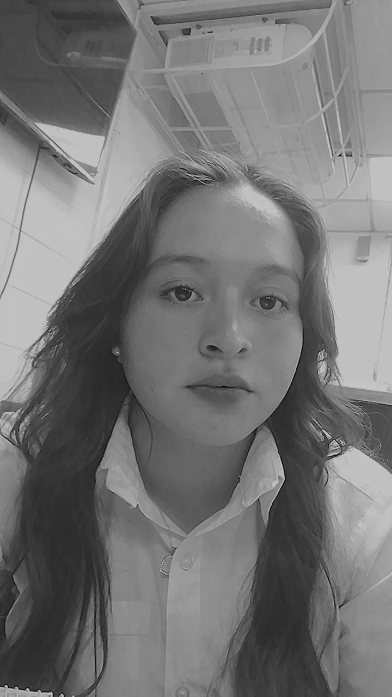
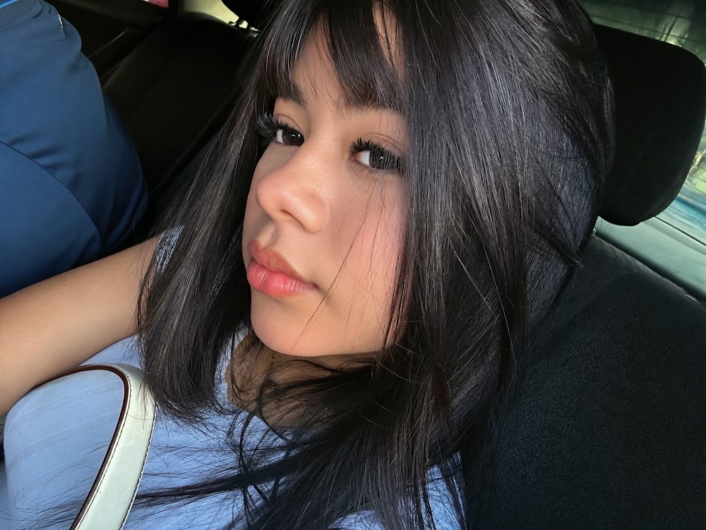
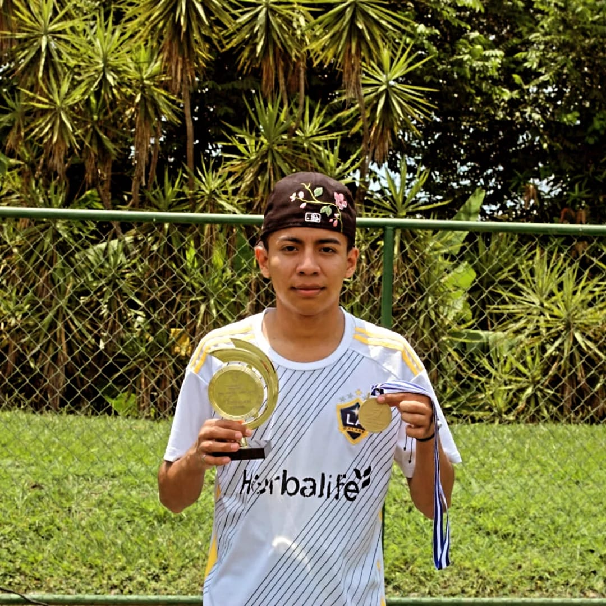
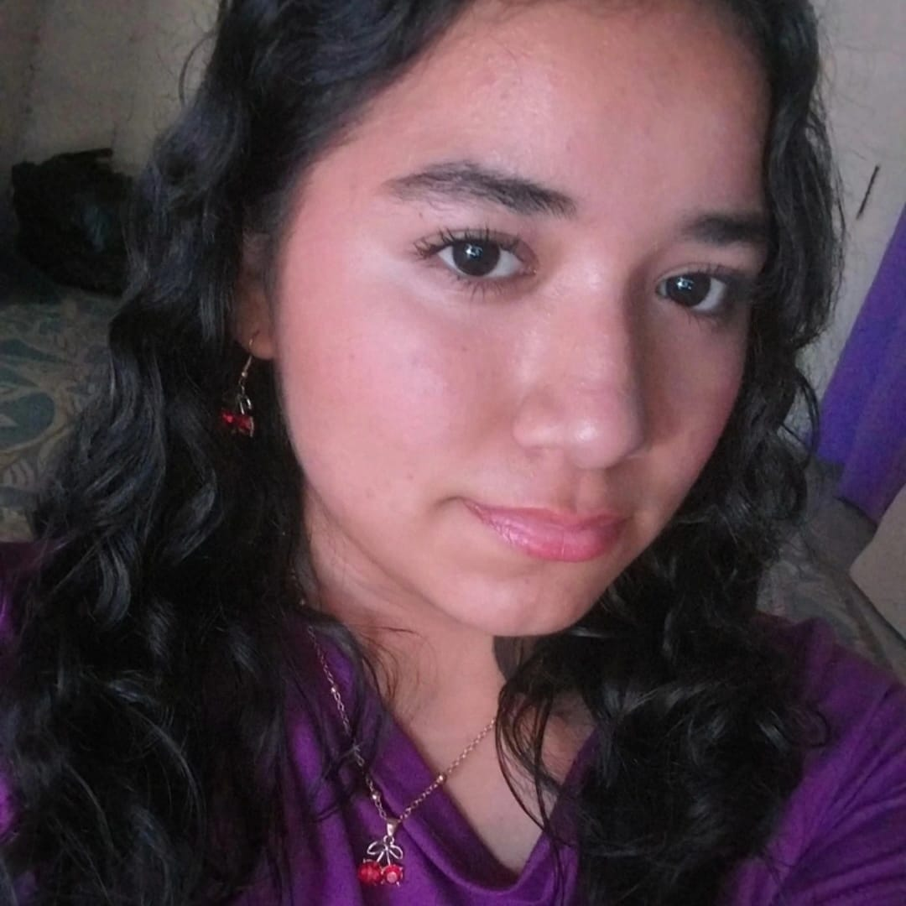

Tatiana Rivera
Comunicación y comunidadOrganiza las ideas y guía el desarrollo de NEXO.SV.
Un espacio educativo creado para conectar a la juventud con las oportunidades y responsabilidades del mundo digital.
Explora tres perfiles. No son etiquetas: son formas de identificar habilidades que puedes desarrollar.
Nace como una propuesta educativa para mostrar que la tecnología puede ser una oportunidad de aprendizaje, creatividad, participación y desarrollo para la juventud salvadoreña.
Somos un equipo que comparte ideas para acercar la tecnología y la ciudadanía digital a más jóvenes.
Nombres provisionales: puedes cambiarlos por los reales.Organiza las ideas y guía el desarrollo de NEXO.SV.

Reúne información y la convierte en recursos claros para aprender.

Da forma visual a las ideas y cuida la experiencia del sitio.

Construye y mejora las herramientas digitales del proyecto.

Conecta el contenido del proyecto con las necesidades de jóvenes.